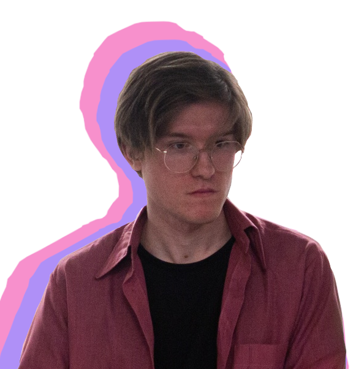
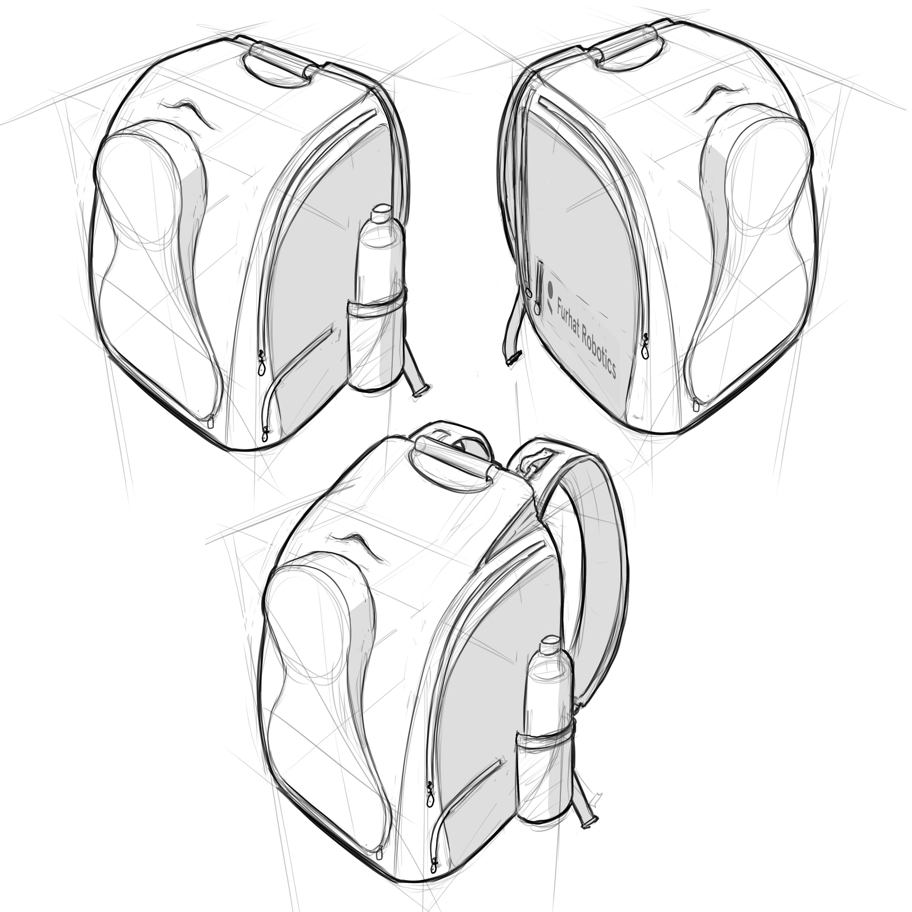
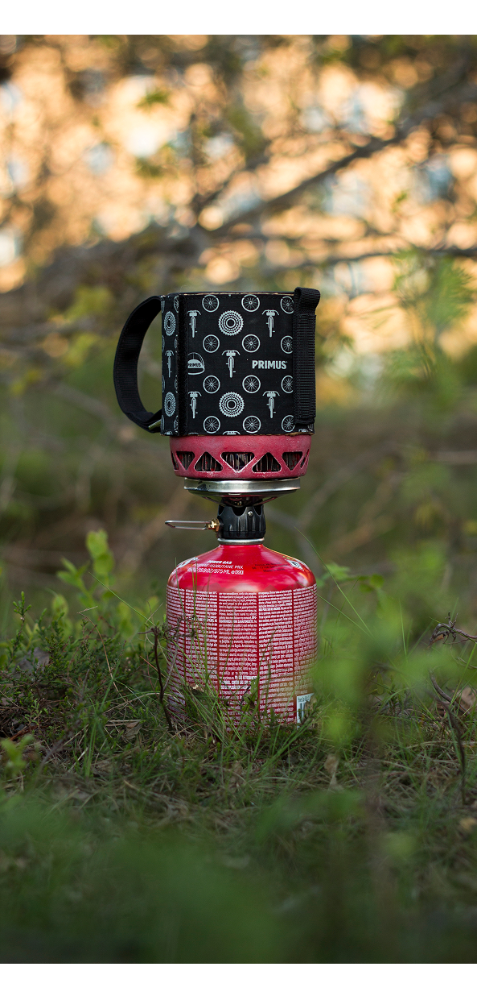
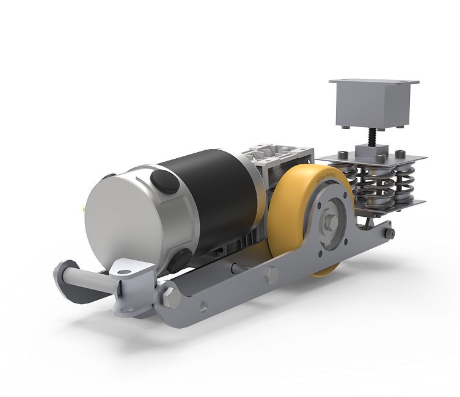

Education
Master's Degree - KTH
Aug 2023 - Jul 2025
Integrated Product Design
Exchange Studies - TU Delft
Feb 2024 - Jul 2024
Integrated Product Design
Bachelor's Degree - KTH
Aug 2020 - Jun 2023
Design & Product Realisation
Stockholm based industrial designer
My journey into Industrial Design Engineering was driven by a lifelong fascination with media, creativity, and complex problem-solving. I'm a firm believer that technical functionality should never come at the expense of design. And vice versa. I love diving deep into user behavior to create designs that aren't just practical, but also bring back a sense of fun and uniqueness to the products we use every day.

Education
Aug 2023 - Jul 2025
Integrated Product Design
Feb 2024 - Jul 2024
Integrated Product Design
Aug 2020 - Jun 2023
Design & Product Realisation
Experience
Oct 2025 - Present
Pitched and led rapid design and concepting projects across hardware and software, delivering functional MVPs that bridge the gap between aesthetic design and technical performance.
Jan 2022 - Jan 2026
Instructed courses in industrial sketching techniques, including curriculum design and the assessment of student assignments.
Aug 2017 - Jul 2019
Tennis Coach, primarily responsible for developing foundational skills in children (ages 4-6), while also conducting technical sessions for older players.
Skills

Design direction and increased comfort for carrying the Furhat robot.

Development of a visual aid to determine if a backpacking stove is burning or not.

Case study, designing a perfume bottle and its scent for Penny Skateboards.

Improving a previous version of an inflight coffee maker, with heavy focus on usability and sustainability.

Designing the next version of a wheel unit used by the Swedish Royal Opera to move and anchor set pieces.